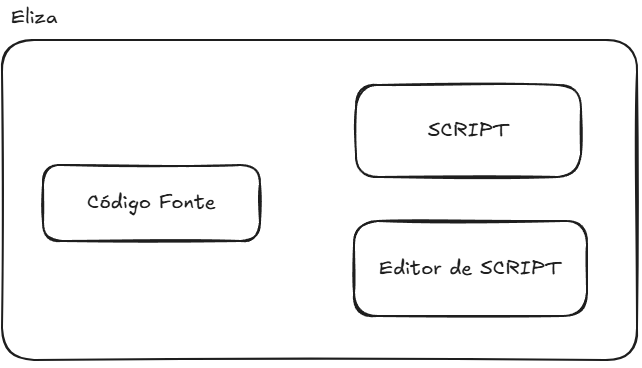
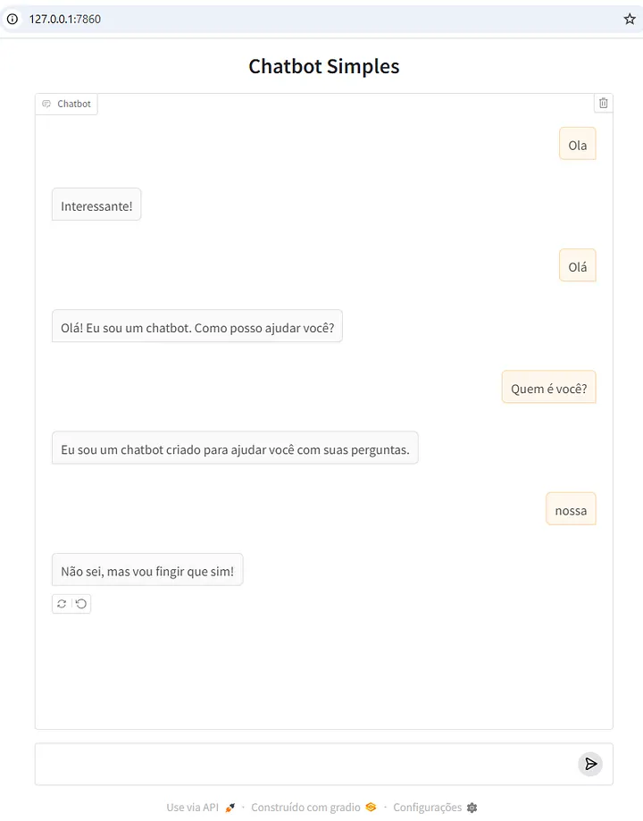
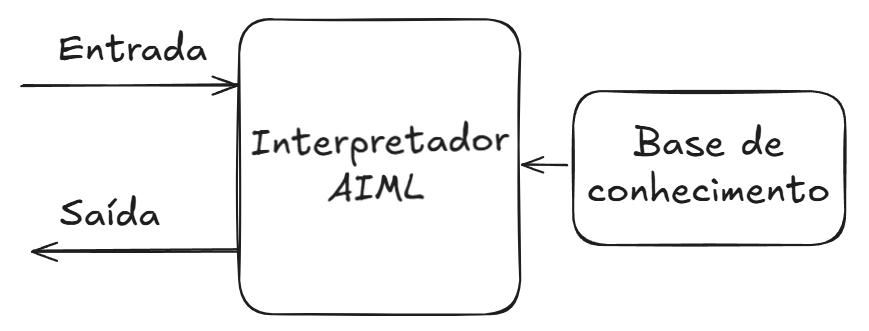
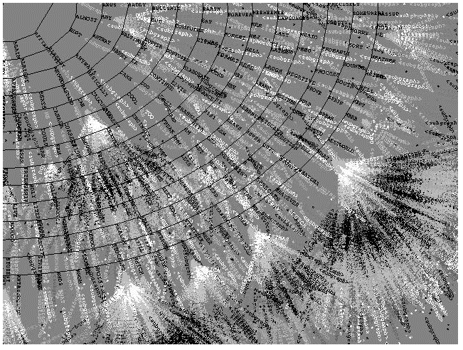

2 ELIZA e AIML
“Somos autómatos em três quartas partes das nossas ações.”
Wilhelm Leibniz
Objetivo Explorar o funcionamento do ELIZA, suas regras de transformação, implementação e legado histórico, evidenciando as bases dos sistemas conversacionais. Além de explicar a linguagem AIML, mostrando como ela possibilitou a construção de chatbots mais robustos e modulares.
2.1 Introdução
O chatbot ELIZA foi um marco histórico e um dos primeiros programas de processamento de linguagem natural e foi apresentado em 1966 por Joseph Weizenbaum no MIT [@Weizenbaum1996].
O conjunto de padrões e respostas predefinidas constitui o que Weizenbaum chamou de “roteiro” (ou script) de conversa. O mecanismo do ELIZA separa o motor de processamento dos dados, sendo o algoritmo de busca de palavras-chave e aplicação de regras, do script em si. Isso significa que ELIZA podia, em teoria, simular diferentes personalidades ou tópicos apenas carregando um script diferente, sem alterar o código do programa (veja na Figura 2.1). Também foi codificado um editor de texto para as alterações do próprio script.

Um destes roteiros, o script DOCTOR, deixou o ELIZA famoso. Com este script carregado, o ELIZA simulava precariamente um psicoterapeuta (do estilo Rogeriano), refletindo as palavras do usuário de volta em forma de pergunta.
Na lista abaixo é apresentado um exemplo de diálogo (retirado do artigo original) entre um usuário humano e ELIZA, mostrando as respostas em letras maiúsculas. Nesse exemplo, o usuário faz afirmações pessoais (“Men are all alike.”, “Well, my boyfriend made me come here.”) e ELIZA responde com perguntas ou reformulações (“IN WHAT WAY”, “YOUR BOYFRIEND MADE YOU COME HERE?”) reutilizando termos do próprio usuário. Esse estilo reflexivo encoraja o usuário a continuar falando sem fornecer respostas diretas.
Men are all alike.
IN WHAT WAY
They're always bugging us about something or other.
CAN YOU THINK OF A SPECIFIC EXAMPLE
Well, my boyfriend made me come here.
YOUR BOYFRIEND MADE YOU COME HERE
He says I'm depressed much of the time.
I AM SORRY TO HEAR YOU ARE DEPRESSED
It's true. I am unhappy.
DO YOU THINK COMING HERE WILL HELP YOU NOT TO BE UNHAPPY
I need some help, that much seems certain.
WHAT WOULD IT MEAN TO YOU IF YOU GOT SOME HELP
Perhaps I could learn to get along with my mother.
TELL ME MORE ABOUT YOUR FAMILY
My mother takes care of me.
WHO ELSE IN YOUR FAMILY TAKES CARE OF YOU
My father.
YOUR FATHER
You are like my father in some ways.
WHAT RESEMBLANCE DO YOU SEE
You are not very aggressive but I think you don't want me to
notice that.
WHAT MAKES YOU THINK I AM NOT VERY AGGRESSIVE
You don't argue with me.
WHY DO YOU THINK I DON'T ARGUE WITH YOU
You are afraid of me.
DOES IT PLEASE YOU TO BELIEVE I AM AFRAID OF YOU
My father is afraid of everybody.
WHAT ELSE COMES TO MIND WHEN YOU THINK OF YOUR FATHER
Bullies.
DOES THAT HAVE ANYTHING TO DO WITH THE FACT THAT YOUR BOYFRIEND MADE YOU COME HERE 2.2 Processamento
O funcionamento do ELIZA baseia-se em correspondência de padrões por palavras-chave [@mittmann2021ElizaOZ]. Técnica também chamada “casamento de padrão”, em inglês pattner matching, seu paradigma também se encaixa na técnica baseada em regras (ou rule-based). A cada turno do diálogo, o texto de entrada do usuário é analisado em busca de palavras-chave predefinidas. O ELIZA faz uma varredura da sentença da esquerda para a direita, identificando se alguma palavra correspondia a uma palavra-chave do script. Caso encontre uma palavra-chave no script, ELIZA empilha essa palavra até o final da frase. Depois, ele seleciona a palavra-chave mais “importante” até encontrar uma pontuação. Para isso, ele mantém uma lista de pesos associados a cada palavra-chave.
Por exemplo, o script DOCTOR definia palavras-chave como “ALIKE” ou “SAME” com alta prioridade; assim, na frase “Men are all alike.” o programa detectava a palavra “ALIKE” e disparava uma resposta associada a ela (no caso: “In what way?”). Se múltiplas palavras-chave aparecessem, ELIZA escolhia aquela de maior peso para formular a resposta.
Primeiro o texto de entrada digitado pelo usuário era separado em palavras, em uma técnica que hoje chamamos de tokenização de palavras, mas que ainda não existia na época. A palavra-chave era identificada, comparando-a sequencialmente até o fim das palavras existentes, ou até ser encontrada uma pontuação. Caso fosse encontrada uma pontuação (ponto final ou vírgula), o texto após a pontuação era ignorado se já tivesse sido identificada uma palavra-chave. Assim, cada processamento da resposta utiliza uma única frase do usuário. Se várias palavras-chave fossem encontradas antes da pontuação, a de maior peso era selecionada.
Por exemplo, o usuário entra com o texto: “I am sick. but, today is raining”. Se houvesse uma palavra-chave no script ranqueando a palavra “SICK” com alta prioridade, a entrada processada seria somente “I am sick”, o restante depois da pontuação (neste caso, o ponto) seria ignorado pelo programa.
Se nenhuma palavra-chave fosse encontrada na entrada, ELIZA recorria a frases genéricas programadas, chamadas de respostas vazias ou sem conteúdo. Nesses casos, o chatbot emitia mensagens do tipo “I see.” ou “Please, go on.”. Esse mecanismo evitava silêncio quando o usuário dizia algo fora do escopo do script.
Além disso, a implementação original incluía uma estrutura de memória: algumas declarações recentes do usuário eram armazenadas e, se uma entrada subsequente não contivesse novas keywords, ELIZA poderia recuperar um tópico anterior e introduzi-lo na conversa. Por exemplo, se o usuário mencionasse família (em inglês family) em um momento e depois fizesse uma afirmação vaga, o programa poderia responder retomando o assunto da família (“DOES THAT HAVE ANYTHING TO DO WITH YOUR FAMILY?”). Essa estratégia dava uma pseudo-continuidade ao diálogo, simulando que o sistema “lembrava” de informações fornecidas anteriormente.
2.3 Regras de Transformação
Encontrada a palavra-chave, ELIZA aplicava uma regra de transformação associada a ela para gerar a resposta. As regras são definidas em pares: um padrão de análise (decomposition rule) e um modelo de reconstrução de frase (reassembly rule).
Primeiro, a frase do usuário é decomposta conforme um padrão que identifica a contexto mínimo em torno da palavra-chave. Essa decomposição frequentemente envolve separar a frase em partes e reconhecer pronomes ou estruturas gramaticais relevantes. Por exemplo, considere a entrada “You are very helpful.”. Uma regra de decomposição pode identificar a estrutura “You are X” — onde “X” representa o restante da frase — e extrair o complemento “very helpful” como um componente separado.
Em seguida, a regra de reassembly correspondente é aplicada, remontando uma sentença de resposta em que “X” é inserido em um template pré-definido. No exemplo dado, o template de resposta poderia ser “What makes you think I am X?”; ao inserir X = “very helpful”, gera-se “What makes you think I am very helpful?”. Observe que há uma inversão de pessoa: o pronome “you” do usuário foi trocado por “I” na resposta do bot.
De fato, uma parte importante das transformações do ELIZA envolve substituir pronomes (eu/você, meu/seu) para que a resposta faça sentido como uma frase do ponto de vista do computador falando com o usuário. Esse algoritmo de substituição é relativamente simples (por exemplo, “meu” → “seu”, “eu” → “você”, etc.), mas é essencial para dar a impressão de entendimento gramatical.
Veja no código-fonte abaixo uma parte do conteúdo do arquivo DOCTOR adaptado. A primeira linha REMEMBER 5 estabelece que a prioridade da palavra REMEMBER é 5, caso o usuário entre com uma frase com a palavra REMEMBER, o ELIZA irá responder com uma das perguntas definidas nos parênteses, dentro do nível da palavra REMEMBER. A segunda lista dentro do REMEMBER são as regras de transformação de frases (chamadas de decomposition rule e reassembly rule) associadas à palavra-chave REMEMBER. O mesmo se repete para a palavra IF que tem um peso diferente de REMEMBER.
(REMEMBER 5
(
(0 YOU REMEMBER 0)
(DO YOU OFTEN THINK OF 4)
(DOES THINKING OF ~ BRING ANYTHING ELSE TO MINO)
(WHAT ELSE OO YOU REMEMBER)
(WHY DO YOU REMEMBER 4 JUST NOW)
(WHAT IN THE PRESENT SITUATION REMINDS YOU OF 4)
(WHAT IS THE CONNECTION BETWEEN ME AND 4)
)
(
(0 DO I REMEMBER 0)
(DID YOU THINK I WOULD FORGET 5)
(WHY DO YOU THINK I SHOULD RECALL 5 NOW)
(WHAT ABOUT 5)
(=WHAT)
(YOU MENTIONED S)
)
)
(IF 3
(
(0 IF 0)
(DO YOU THINK ITS LIKELY THAT 3)
(DO YOU WISH THAT 3)
(WHAT DO YOU THINK ABOUT 3)
(REALLY, 2 3)
)
)2.4 Implementação e Variações
A implementação original de ELIZA foi feita em uma linguagem chamada MAD-SLIP (um dialeto de Lisp) rodando em um mainframe IBM 7094 no sistema CTSS do MIT. O código-fonte do programa principal continha o mecanismo de correspondência, enquanto as regras de conversação (script DOCTOR) eram fornecidas separadamente em formato de listas associativas, similar a uma lista em Lisp. Infelizmente, Weizenbaum não publicou o código completo no artigo de 1966 (o que era comum na época), mas décadas depois o código em MAD-SLIP foi recuperado nos arquivos do MIT, comprovando os detalhes de implementação [@Lane2025]. De qualquer forma, a arquitetura descrita no artigo influenciou inúmeras reimplementações acadêmicas e didáticas nos anos seguintes.
Diversos entusiastas e pesquisadores reescreveram ELIZA em outras linguagens de programação, dada a simplicidade relativa de seu algoritmo. Ao longo dos anos, surgiram versões em Lisp, PL/I, BASIC, Pascal, Prolog, Java, Python, OZ, JavaScript, entre muitas outras. Cada versão normalmente incluía o mesmo conjunto de regras do script terapeuta ou pequenas variações.
As ideias de ELIZA também inspiraram chatbots mais avançados. Poucos anos depois, em 1972, surgiu PARRY, escrito pelo psiquiatra Kenneth Colby, que simulava um paciente paranoico. PARRY tinha um modelo interno de estado emocional e atitudes, mas na camada de linguagem ainda usava muitas respostas baseadas em regras, chegando a “conversar” com o próprio ELIZA em experimentos da época.
Em 1995, Richard Wallace desenvolveu o chatbot ALICE (Artificial Linguistic Internet Computer Entity), que levava o paradigma de ELIZA a uma escala muito maior. ALICE utilizava um formato XML chamado AIML (Artificial Intelligence Markup Language) para definir milhares de categorias de padrões e respostas. Com mais de 16.000 templates mapeando entradas para saídas [@Wallace2000], ALICE conseguia manter diálogos bem mais naturais e abrangentes que o ELIZA original, embora o princípio básico de correspondência de padrões permanecesse. Esse avanço rendeu a ALICE três vitórias no Prêmio Loebner (competição de chatbots) no início dos anos 2000 [@Wallace2000].
Outras variações e sucessores notáveis incluem Jabberwacky (1988) – que já aprendia novas frases – e uma profusão de assistentes virtuais e bots de domínio específico nas décadas seguintes [@Wallace2000]. Em suma, o legado de ELIZA perdurou por meio de inúmeros chatbots baseados em regras, até a transição para abordagens estatísticas e de aprendizado de máquina no final do século XX.
2.5 Mecanismo de Pesos
A técnica de ELIZA, baseada em palavras-chave com respostas predefinidas, contrasta fortemente com os métodos de Modelos de Linguagem Grande (LLMs) atuais, como o Generative Pre-trained Transformer (GPT), que utilizam redes neurais de milhões (ou trilhões) de parâmetros e mecanismos de atenção. Mais detalhes sobre LLM no Capítulo 4.
No ELIZA, a “importância” de uma palavra era determinada manualmente pelo programador através de pesos ou rankings atribuídos a certas palavras-chave no script. Ou seja, o programa não aprendia quais termos focar – ele seguia uma lista fixa de gatilhos. Por exemplo, termos como “sempre” ou “igual” tinham prioridade alta no script DOCTOR para garantir respostas apropriadas.
Em contraste, modelos modernos como o GPT não possuem uma lista fixa de palavras importantes; em vez disso, eles utilizam o mecanismo de self-attention para calcular dinamicamente pesos entre todas as palavras da entrada conforme o contexto [@vaswani2017attention].
Na arquitetura Transformer, cada palavra (na prática não é uma palavra e sim um token) de entrada gera consultas e chaves que interagem com todas as outras, permitindo ao modelo atribuir pesos maiores às palavras mais relevantes daquela frase ou parágrafo [@vaswani2017attention]. Em outras palavras, o modelo aprende sozinho quais termos ou sequências devem receber mais atenção para produzir a próxima palavra na resposta. Esse mecanismo de atenção captura dependências de longo alcance e nuances contextuais que um sistema de palavras-chave fixas como o ELIZA não consegue representar.
Além disso, o “vocabulário” efetivo de um LLM é imenso – um modelo GPT pode ser treinado com trilhões de palavras e ter ajustado seus parâmetros para modelar estatisticamente a linguagem humana [@vaswani2017attention]. Como resultado, pode-se dizer metaforicamente que os LLMs têm uma lista de “palavras-chave” milhões de vezes maior (na prática, distribuída em vetores contínuos) e um método bem mais sofisticado de calcular respostas do que o ELIZA.
Enquanto ELIZA dependia de coincidências exatas de termos para disparar regras, modelos como GPT avaliam similaridades semânticas e contexto histórico graças às representações densas (embeddings) aprendidas durante o treinamento de rede neural.
2.6 Geração de Texto
Devido à sua abordagem baseada em regras locais, o ELIZA tinha capacidade de contextualização muito limitada. Cada input do usuário era tratado quase isoladamente: o programa não construía uma representação acumulada da conversa, além de artifícios simples como repetir algo mencionado (a estrutura de memória) ou usar pronomes para manter a ilusão de continuidade. Se o usuário mudasse de tópico abruptamente, o ELIZA não “perceberia” – ele apenas buscaria a próxima palavra-chave disponível ou recorreria a frases genéricas.
Em contraste, modelos de linguagem modernos levam em conta um longo histórico de diálogo. Chatbots que usam GPT podem manter um contexto de centenas ou milhares de tokens (palavras ou fragmentos) em sua janela de atenção, o que significa que eles conseguem referenciar informações mencionadas vários parágrafos atrás e integrá-las na resposta corrente. O mecanismo de self-attention, em particular, permite que o modelo incorpore relações contextuais complexas: cada palavra gerada pode considerar influências de palavras distantes no texto de entrada [@vaswani2017attention].
Por exemplo, ao conversar com um LLM, se você mencionar no início da conversa que tem um irmão chamado Alex e depois perguntar “ele pode me ajudar com o problema?”, o modelo entenderá que “ele” se refere ao Alex mencionado anteriormente (desde que dentro da janela de contexto). Já o ELIZA original não teria como fazer essa ligação, a menos que houvesse uma regra explícita para “ele” e algum armazenamento específico do nome – algo impraticável de antecipar via regras fixas para todos os casos.
Outra diferença está na geração de linguagem. O ELIZA não gera texto original no sentido pleno: suas respostas são em grande parte frases prontas (ou templates fixos) embaralhadas com partes da fala do usuário. Assim, seu vocabulário e estilo são limitados pelo script escrito manualmente. Modelos GPT, por sua vez, geram respostas novas combinando probabilisticamente o conhecimento adquirido de um extenso corpus. Eles não se restringem a repetir trechos da entrada, podendo elaborar explicações, fazer analogias, criar perguntas coerentes com os exemplos linguísticos em sua base de treinamento. Enquanto ELIZA tendia a responder com perguntas genéricas ou devolvendo as palavras do usuário, os LLMs podem produzir respostas informativas e detalhadas sobre o assunto (pois “aprenderam” uma ampla gama de tópicos durante o treinamento). Por exemplo, se perguntarmos algo factual ou complexo, o ELIZA falharia por não ter nenhuma regra a respeito, provavelmente dando uma resposta vazia. Já um modelo como GPT tentará formular uma resposta baseada em padrões linguísticos aprendidos e em conhecimento implícito dos dados, muitas vezes fornecendo detalhes relevantes.
Em termos de fluência e variedade, os modelos modernos superam o ELIZA amplamente. O ELIZA frequentemente se repetia ou caía em loops verbais quando confrontado com inputs fora do roteiro – um limite claro de sistemas por regras estáticas. Os LLMs produzem linguagem muito mais natural e adaptável, a ponto de muitas vezes enganarem os usuários sobre estarem conversando com uma máquina (um efeito buscado desde o Teste de Turing). Ironicamente, ELIZA nos anos 60 já provocou um precursor desse fenômeno – o chamado Efeito ELIZA, em que pessoas atribuem compreensão ou sentimentos a respostas de computador que, na verdade, são superficiais. Hoje, em chatbots GPT, esse efeito se intensifica pela qualidade das respostas, mas a distinção fundamental permanece: ELIZA seguia scripts sem compreender, enquanto LLMs inferem padrões e significados de forma estatística, sem entendimento consciente, mas atingindo resultados que simulam compreensão de maneira muito mais convincente.
Em resumo, os avanços de arquitetura (especialmente o mecanismo de atenção) ampliaram drasticamente a capacidade de contextualização e geração dos chatbots modernos, marcando uma evolução significativa desde o mecanismo simples, porém pioneiro, de ELIZA.
2.7 ELIZA com Python
A seguir o código-fonte de um programa que retorna o que o usuário digitou na linguagem de programação Python, inspirado no paradigma ELIZA.
# método que processa a entrada do usuário
def response(user_input):
return "Você disse: " + user_input
# Exemplo de uso
user_input = "Eu estou feliz"
print("Você: {}".format(user_input))
print("Eliza: {}".format(response(user_input)))
user_input = "Eu estou alegre"
print("Você: {}".format(user_input))
print("Eliza: {}".format(response(user_input)))Você: Eu estou feliz
Eliza: Você disse: Eu estou feliz
Você: Eu estou alegre
Eliza: Você disse: Eu estou alegreEste código acima simplesmente repete o que o usuário digita. Ele define a função response, que retorna a string “Você disse:” concatenada ao texto recebido.
Logo abaixo uma implementação um pouco mais robusta de um chatbot inspirado no paradigma ELIZA. Esta implementação demonstra a utilização de expressões regulares - mais sobre expressões regulares no Capítulo 3 - para a identificação de padrões textuais (palavras-chave) na entrada fornecida pelo usuário e a subsequente geração de respostas, fundamentada em regras de transformação predefinidas manualmente.
import re
import random
regras = [
(re.compile(r'\b(hello|hi|hey)\b', re.IGNORECASE),
["Hello. How do you do. Please tell me your problem."]), # regra 1
(re.compile(r'\b(I am|I\'?m) (.+)', re.IGNORECASE), # regra 2
["How long have you been {1}?",
"Why do you think you are {1}?"]),
(re.compile(r'\bI need (.+)', re.IGNORECASE), # regra 3
["Why do you need {1}?",
"Would it really help you to get {1}?"]),
(re.compile(r'\bI can\'?t (.+)', re.IGNORECASE), # regra 4
["What makes you think you can't {1}?",
"Have you tried {1}?"]),
(re.compile(r'\bmy (mother|father|mom|dad)\b', re.IGNORECASE), # regra 5
["Tell me more about your family.",
"How do you feel about your parents?"]),
(re.compile(r'\b(sorry)\b', re.IGNORECASE), # regra 6
["Please don't apologize."]),
(re.compile(r'\b(maybe|perhaps)\b', re.IGNORECASE), # regra 7
["You don't seem certain."]),
(re.compile(r'\bbecause\b', re.IGNORECASE), # regra 8
["Is that the real reason?"]),
(re.compile(r'\b(are you|do you) (.+)\?$', re.IGNORECASE), # regra 9
["Why do you ask that?"]),
(re.compile(r'\bcomputer\b', re.IGNORECASE), # regra 10
["Do computers worry you?"]),
]
respostas_padrao = [
"I see.",
"Please tell me more.",
"Can you elaborate on that?"
]
def response(entrada_usuario):
for padrao, respostas in regras:
match = padrao.search( entrada_usuario)
if match:
resposta = random.choice(respostas)
if match.groups():
resposta = resposta.format( *match.groups())
return resposta
return random.choice(respostas_padrao)
print("User: Hello.")
print("Bot: " + response("Hello."))
print("User: I am feeling sad.")
print("Bot: " + response("I am feeling sad."))
print("Maybe I was not good enough.")
print("Bot: " + response("Maybe I was not good enough."))
print("My mother tried to help.")
print("Bot: " + response("My mother tried to help."))User: Hello.
Bot: Hello. How do you do. Please tell me your problem.
User: I am feeling sad.
Bot: How long have you been feeling sad.?
Maybe I was not good enough.
Bot: You don't seem certain.
My mother tried to help.
Bot: How do you feel about your parents?Na implementação anterior, são definidos múltiplos padrões de expressões regulares que correspondem a palavras-chave ou estruturas frasais de interesse (e.g., saudações, construções como “I am” ou “I need”, referências a termos familiares). A função response, ao receber uma string de entrada, itera sequencialmente sobre essas regras.
Quando uma correspondência (match) é encontrada, uma resposta associada à regra é selecionada. É relevante notar que diversas respostas predefinidas contêm marcadores (placeholders), como {1}. Estes marcadores são dinamicamente substituídos pelo conteúdo dos grupos capturados pela expressão regular (mais detalhes sobre expressão regular no Capítulo 3 na entrada original do usuário). Por exemplo, se a entrada for “I am sad” e esta corresponder a um padrão como r“I am (.*)”, o grupo capturado ((.*)) conterá a string “sad”. Se a resposta associada for “Why do you think you are {1}?”, o sistema a formatará como “Why do you think you are sad?”, substituindo {1} pelo conteúdo do primeiro grupo capturado. Na ausência de correspondência com qualquer regra específica, o sistema seleciona aleatoriamente uma resposta genérica a partir de um conjunto predefinido (denominado, por exemplo, respostas_padrao), tal como “I see.”.
Usuário: Hello
Bot: Hello. How do you do. Please tell me your problem.
Usuário: I am feeling sad
Bot: Why do you think you are feeling sad?
Usuário: Because I lost my job
Bot: Is that the real reason?
Usuário: Maybe I was not good enough.
Bot: You don't seem certain.
Usuário: My mother tried to help.
Bot: Tell me more about your family.Observa-se na interação que o chatbot inicialmente respondeu à saudação (“Hello...”) com base na regra 1. Em seguida, a entrada “I am sad” ativou a regra 2, resultando em uma resposta que incorpora o termo “sad”. A interação prossegue com o sistema respondendo a entradas iniciadas por “Because...” (regra 8) e “Maybe...” (regra 7), entre outras. Cada resposta gerada foi determinada pela regra correspondente ativada e pelo conteúdo específico da sentença do usuário, mimetizando o comportamento baseado em padrões do sistema ELIZA original [@Abdul-Kader2015].
2.8 ELIZA com Python e Gradio
Nesta seção, vamos explorar como criar um chatbot usando a biblioteca Gradio e Python.
O Gradio é uma biblioteca de código aberto que permite criar interfaces de usuário para modelos de machine learning de forma rápida e fácil. Com Gradio, você pode criar aplicativos web interativos para visualizar e testar seus modelos, sem precisar de conhecimentos em frontend ou backend.
Antes de começar, certifique-se de ter o Python e o pip instalados em sua máquina. Em seguida, instale a biblioteca Gradio usando o comando:
$ pip install gradioÀ seguir está um exemplo básico de como criar um chatbot com Gradio e Python:
import gradio as gr
def chatbot(message, history):
resposta = "Olá! Eu sou um chatbot. Como posso ajudar você?"
return resposta
demo = gr.ChatInterface(
fn=chatbot,
title="Chatbot Simples"
)
demo.launch()Este código define uma função chatbot que processa o texto de entrada e retorna uma resposta. Em seguida, cria uma interface do chatbot usando a biblioteca Gradio, com um campo de texto para entrada e outro para saída.
Execute o chatbot: Salve o arquivo e, no terminal, navegue até o diretório onde ele está salvo. Digite:
$ python chatbot.pyVocê verá um link local (algo como http://127.0.0.1:7860). Clique nele ou copie e cole no navegador. Uma interface simples aparecerá com um campo de texto. Experimente digitar “olá” ou “tchau” e veja as respostas. Veja na Figura 2.2 um print da tela do chatbot já em execução.

Adicionando Lógica ao Chatbot: Agora que você tem uma interface básica, é hora de adicionar lógica ao chatbot. Você pode fazer isso adicionando condições e processamento de texto à função chatbot. Por exemplo:
# pip install gradio
import gradio as gr
def chatbot(message, history):
if "Olá" in message:
resposta = "Olá! Eu sou um chatbot. Como posso ajudar você?"
elif "Quem é você?" in message:
resposta = "Eu sou um chatbot criado para ajudar você com suas perguntas."
else:
resposta = "Desculpe, não entendi sua pergunta. Pode tentar novamente?"
return resposta
demo = gr.ChatInterface(
fn=chatbot,
title="Chatbot Simples"
)
demo.launch()Na Figura 2.3 é possível visualizar o print da tela de um chatbot que responde de forma aleatória. Logo abaixo, o código-fonte que deu origem ao chatbot.
# pip install gradio
import gradio as gr
import random
def chatbot(message, history):
respostas = ["Interessante!", "Hmm, me conte mais!", "Não sei, mas vou fingir que sim!"]
if "Olá" in message:
resposta = "Olá! Eu sou um chatbot. Como posso ajudar você?"
elif "Quem é você?" in message:
resposta = "Eu sou um chatbot criado para ajudar você com suas perguntas."
else:
resposta = random.choice(respostas)
return resposta
demo = gr.ChatInterface(
fn=chatbot,
title="Chatbot Simples"
)
demo.launch()
Criar um chatbot com Gradio e Python é uma tarefa relativamente simples e rápida. Com essa biblioteca, você pode criar interfaces de usuário interativas para seus modelos de aprendizagem de máquina e criar chatbots para automação de tarefas ou suporte ao cliente. Este é apenas um exemplo básico, e você pode adicionar mais lógica e funcionalidades ao seu chatbot para torná-lo mais útil.
2.9 Artificial Intelligence Markup Language (AIML)
Décadas depois do Eliza, as técnicas de programação avançaram, surgiu a web e as linguagens de marcação como o HTML ganharam tração. É neste cenário que é criado o Artificial Intelligence Markup Language (AIML), uma especificação baseada em XML, proposta por @Wallace2009, destinada à programação de chatbots. A concepção da linguagem prioriza o minimalismo, característica que simplifica o processo de criação de bases de conhecimento por indivíduos sem experiência prévia em programação [@Wallace2009]. A arquitetura fundamental de um interpretador AIML genérico é ilustrada na Figura 2.4.

Adaptado de (A. C. da Silva and Costa 2007)
A técnica central empregada pelo AIML é a correspondência de padrões (pattern matching). Este método é amplamente utilizado no desenvolvimento de chatbots, particularmente em sistemas orientados a perguntas e respostas [@Abdul-Kader2015]. Uma das metas de projeto do AIML é possibilitar a fusão de bases de conhecimento de múltiplos chatbots especializados em domínios distintos. Teoricamente, um interpretador poderia agregar essas bases, eliminando automaticamente categorias redundantes para formar um chatbot mais abrangente [@Wallace2000].
AIML é frequentemente associado aos chatbots de terceira geração [@Maria2010] e estima-se sua adoção em mais de 50.000 implementações em diversos idiomas. Extensões da linguagem foram propostas, como o iAIML, que introduziu novas tags e incorporou o conceito de intenção com base nos princípios da Teoria da Análise da Conversação [@Neves2005]. Adicionalmente, ferramentas baseadas na Web foram desenvolvidas para apoiar a construção de bases de conhecimento AIML [@Krassmann2017]. Um exemplo proeminente é o chatbot ALICE, cuja implementação em AIML compreendia aproximadamente 16.000 categorias, cada uma potencialmente contendo múltiplas tags XML aninhadas [@Wallace2000]. Uma representação visual desta estrutura de conhecimento é apresentada na Figura 2.5.

Retirado de (R. Wallace 2003)
@Wallace2000 estabeleceu analogias entre o funcionamento de interpretadores AIML e a teoria do Raciocínio Baseado em Casos (RBC). Nessa perspectiva, as categorias AIML funcionam como “casos”, onde o algoritmo identifica o padrão que melhor se alinha à entrada do usuário. Cada categoria estabelece um vínculo direto entre um padrão de estímulo e um modelo de resposta. Consequentemente, chatbots AIML inserem-se na tradição da robótica minimalista, reativa ou de estímulo-resposta [@Wallace2000], conforme esquematizado na Figura 2.6. Vale notar que a própria técnica de RBC já foi integrada a interpretadores AIML como um mecanismo para consultar fontes de dados externas e expandir a base de conhecimento do agente [@Kraus2008].

Retirado de (Lima 2017).
Os chatbots que utilizam AIML são classificados como sistemas “baseados em recuperação” (retrieval-based). Tais modelos operam a partir de um repositório de respostas predefinidas, selecionando a mais apropriada com base na entrada do usuário e no contexto conversacional, guiando assim o fluxo da interação. Esta abordagem é frequentemente empregada na construção de chatbots destinados a operar em domínios de conhecimento restritos [@borah2018survey].
O código-fonte à seguir, demonstra a estrutura elementar de um arquivo AIML. A tag <category> encapsula a unidade básica de conhecimento. Internamente, a tag <pattern> define o padrão de entrada a ser reconhecido (no exemplo, o caractere curinga *, que corresponde a qualquer entrada), enquanto a tag <template> contém a resposta associada. No exemplo ilustrado, o chatbot responderia “Hello!” a qualquer interação. Uma visão abstrata da árvore de conhecimento resultante pode ser observada logo abaixo. O AIML padrão suporta transições baseadas primariamente em correspondência de padrões, uma limitação inerente, embora extensões específicas de interpretadores possam permitir a integração de outras técnicas de processamento.
<aiml>
<category>
<pattern>*</pattern>
<template>Hello!</template>
</category>
</aiml>

Retirado de https://www.pandorabots.com/docs/aiml-fundamentals/
O profissional responsável pela criação, manutenção e curadoria da base de conhecimento de um chatbot AIML é denominado botmaster [@Wallace2000]. Suas atribuições englobam a edição da base (frequentemente via ferramentas auxiliares), a análise de logs de diálogo para identificar padrões de interação e a subsequente criação ou refino de respostas. Este papel pode ser exercido por indivíduos com diferentes perfis, incluindo webmasters, desenvolvedores, redatores, engenheiros ou outros interessados na construção de chatbots [@Wallace2000].
Algumas implementações de interpretadores AIML podem incorporar capacidades rudimentares de compreensão semântica através do Resource Description Framework (RDF)[^1]. O RDF é um padrão W3C para representação de informações na Web, usualmente por meio de triplas (sujeito-predicado-objeto) que descrevem relações entre entidades. No contexto AIML, RDF pode ser utilizado para armazenar e consultar fatos. Contudo, mesmo com tais adições, as capacidades linguísticas permanecem aquém da complexidade e do potencial gerativo da linguagem humana, conforme descrito por @chomsky2002syntactic.
Embora @Hohn2019 argumente que o AIML padrão carece de um conceito explícito de “intenção” (intent), similar ao encontrado em plataformas de Natural Language Understanding (NLU), é possível emular o reconhecimento de intenções. Isso é tipicamente alcançado definindo categorias que representam “formas canônicas” ou “padrões atômicos” para uma intenção específica[^2]. Variações de entrada (e.g., “oi”, “olá”) podem ser mapeadas para uma categoria canônica (e.g., “saudação”) usando a tag <srai> (Symbolic Reduction Artificial Intelligence), que redireciona o fluxo de processamento (ver Figura 2.8). Dessa forma, um chatbot AIML pode gerenciar intenções distintas dentro de seu domínio, como realizar um pedido ou verificar o status de entrega.

<srai>.Retirado de (De Gasperis, Chiari, and Florio 2013)
Os chatbots baseados em AIML têm obtido sucesso significativo em competições como o Prêmio Loebner. Notavelmente, o chatbot Mitsuku[^3], desenvolvido por Steve Worswick, conquistou múltiplos títulos [^4], seguindo vitórias anteriores do ALICE [@Wallace2000].
Adicionalmente, Mitsuku foi classificado em primeiro lugar numa análise comparativa envolvendo oito chatbots [@Sharma2020]. Nesse estudo, que avaliou atributos conversacionais com base em um conjunto padronizado de perguntas, o Google Assistant obteve a segunda posição, seguido pela Siri em terceiro. O chatbot ALICE alcançou a quarta posição, enquanto o ELIZA ficou na última colocação entre os sistemas comparados [@Sharma2020].
2.9.2 Exemplo em Python
A seguir um exemplo do uso de um interpretador AIML em Python. O arquivo “cerebro.aiml” deve existir anteriormente. Use uma versão compatível com a biblioteca aiml que é somente compatível com versões antigas do Python, do Python 3.6 para trás, ou seja, não funciona no Python 3.12.
# pip install aiml
import aiml
# Criar kernel (núcleo do bot)
kernel = aiml.Kernel()
cerebro_aiml_text = """
<aiml version="1.0.1" encoding="UTF-8">
<category>
<pattern>OI</pattern>
<template>Olá! Como posso ajudar você?</template>
</category>
<category>
<pattern>OBRIGADO</pattern>
<template>De nada!</template>
</category>
</aiml>
"""
# Salvar o conteúdo AIML em um arquivo
with open("cerebro.aiml", "w", encoding="utf-8") as f:
f.write(cerebro_aiml_text)
# Carregar o arquivo AIML
kernel.learn("cerebro.aiml")
# Loop de conversa
while True:
user_input = input("Você: ")
if user_input.lower() in ["sair", "exit", "quit"]:
break
response = kernel.respond(user_input)
print("Bot:", response)Você: oi
Bot: Olá! Como posso ajudar você?O arquivo std-startup.xml é um ponto de partida e geralmente carrega outros arquivos .aiml.
<aiml version="1.0.1" encoding="UTF-8">
<category>
<pattern>OI</pattern>
<template>Olá! Como posso te ajudar?</template>
</category>
<category>
<pattern>QUAL SEU NOME</pattern>
<template>Eu sou um chatbot em AIML.</template>
</category>
</aiml>2.10 Exercícios
Assinale a alternativa que melhor descreve a principal diferença entre um chatbot conversacional e um chatbot orientado a tarefas:
O chatbot conversacional utiliza apenas regras, enquanto o orientado a tarefas utiliza apenas redes neurais.
O chatbot conversacional busca manter diálogo aberto, enquanto o orientado a tarefas segue fluxos específicos para executar ações.
Chatbots orientados a tarefas não podem utilizar linguagem natural.
Chatbots conversacionais não podem responder perguntas sobre assuntos gerais.
Sobre o ELIZA, marque a alternativa correta:
Utilizava redes neurais profundas e mecanismos de autoatenção.
Interpretava semanticamente as frases do usuário com compreensão profunda.
Baseava-se em regras simples e padrões para reformular entradas do usuário.
Possuía memória de longo prazo para manter contexto amplo de conversa.
A arquitetura Transformers, introduzida em 2017, é caracterizada principalmente por:
Utilizar sequências fixas de regras pré-programadas.
Empregar mecanismos de autoatenção para avaliar relações entre palavras.
Substituir completamente qualquer forma de treinamento com dados.
Impedir o uso de modelos generativos em tarefas de diálogo.
Qual a definição de Artificial Intelligence Markup Language (ou AIML):
Uma linguagem de marcação baseada em XML para construção de chatbots por correspondência de padrões.
Um algoritmo estatístico baseado em cadeias de Markov.
Uma técnica de aprendizado profundo utilizada em modelos generativos.
Uma ferramenta exclusiva para chatbots multimodais.
De acordo com a discussão sobre agentes, qual das alternativas caracteriza corretamente um “agente” no contexto apresentado?
Um programa capaz apenas de gerar texto sem interagir com o ambiente.
Uma entidade computacional que percebe seu ambiente e atua por meio de sensores e atuadores.
Um sistema que realiza exclusivamente tarefas bancárias automatizadas.
Qualquer modelo de linguagem de grande porte, independentemente de suas capacidades.
Explique em que sentido um chatbot pode ser entendido como uma instanciação específica de um agente. Em sua resposta, (a) apresente uma definição de chatbot, (b) apresente uma definição de agente e (c) discuta as diferenças e sobreposições entre esses conceitos, incluindo a distinção entre sistemas que apenas conversam e sistemas que também utilizam ferramentas externas (como navegação na Web, execução de código e interação com APIs).
Compare os chatbots ELIZA e ChatGPT considerando pelo menos quatro aspectos: (a) período histórico e contexto de surgimento, (b) técnica ou abordagem principal utilizada para gerar respostas, (c) tipo de tarefa ou objetivo conversacional para o qual foram concebidos e (d) limitações em termos de compreensão de linguagem, contexto e emoções. Finalize discutindo por que ambos podem ser classificados como chatbots conversacionais.
Diferencie chatbots conversacionais e chatbots orientados a tarefas, ilustrando sua resposta com exemplos. Em seguida, analise o papel do fluxo conversacional nesses sistemas: descreva como fluxos de diálogo (por exemplo, árvores de decisão e fluxos de perguntas e respostas) são empregados em chatbots orientados a tarefas, e comente sobre como esses fluxos se relacionam com conceitos da Análise da Conversação, como tópicos conversacionais e coerência entre turnos.
Apresente e discuta a evolução das abordagens tecnológicas para a construção de chatbots, partindo de sistemas baseados em correspondência de padrões (como ELIZA e AIML/ALICE) até modelos neurais modernos baseados em Transformers e LLMs (como BERT, GPT e outros modelos recentes listados no capítulo). Em sua resposta, destaque: (a) a ideia central de cada abordagem, (b) vantagens e desvantagens principais e (c) impactos dessa evolução na qualidade das interações com os usuários.
Desenvolva um texto em que você (a) explique por que um chatbot, mesmo avançado, não pode ser considerado pensante nos mesmos termos que um humano, (b) descreva problemas práticos de construção e manutenção de chatbots (por exemplo, complexidade de fluxos condicionais, atualização de conhecimento, dificuldade de visualização de diálogos complexos) e (c) discuta o papel de ferramentas de autoria no-code na tentativa de tornar o desenvolvimento de chatbots mais acessível a usuários sem formação em programação.